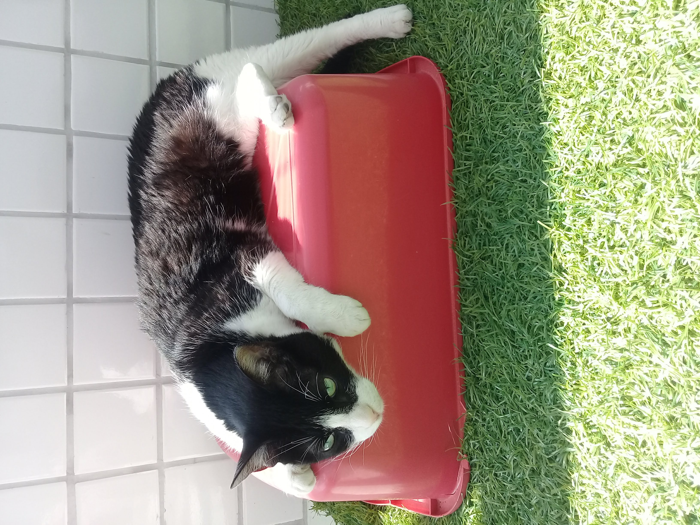
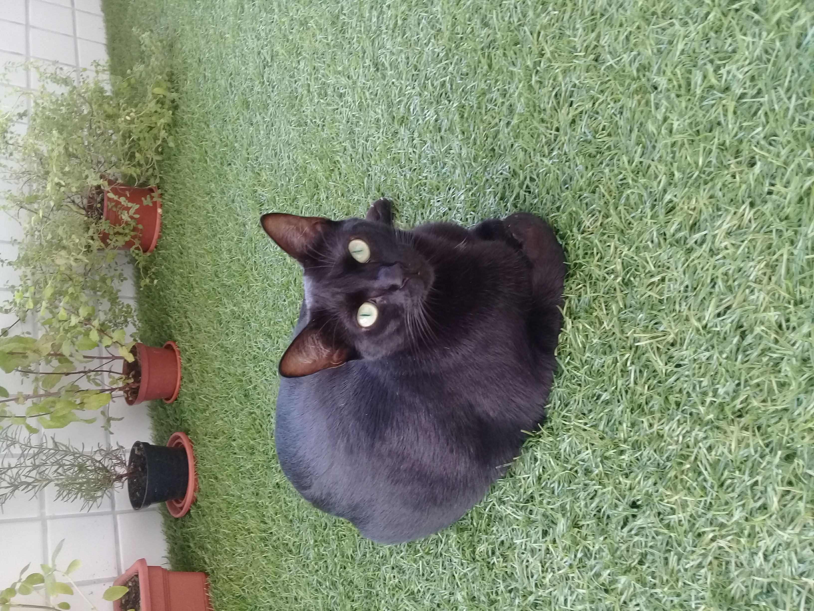

Foi adotada com 15 meses de idade.
Sempre gostou de colo, mas não de carinho no corpo. Eu a convenci do contrário.
Morde como se não houvesse amanhã, mas pede comida com os olhos.
Brinca como um filhote, embora já tenha quase 5 anos.
Corre feito uma louca, sobe nos móveis, dá cambalhotas.
E sempre sabe quando estamos chegando em casa.
Tem um miado charmoso e é extremamente graciosa, ainda assim, anda de um jeito muito engraçado.
Ela é minha Zuzu Bolinha.

Tom
Ele vivia nas ruas e tinha 13 meses de idade quando decidiu nos adotar.
Pulou no meu colo e deitou para dormir, sem qualquer cerimônia.
A Nina não gostou muito da ideia; depois ficaram amigos, mas voltaram a se estranhar.
Tom é um gato alfa, ciumento, exigente e muito sensível.
Gosta mais de brincar com a gente do que com os outros gatos.
Pede comida arranhando as nossas pernas. :(
Tem um miado fininho e anda rebolando, trotando feito um cavalinho.
Ele é o meu Toucinho bebê.

Elza
Ela tinha 5 meses quando a adotamos, e chegou bem assustada.
É muito carinhosa e gosta de ficar sempre junto dos outros gatos,
mas demorou para pedir e aceitar colo.
É extremamente gulosa, por isso está um pouquinho acima do peso,
e ainda assim é uma caçadora implacável de mosquitos e afins.
Tem uma voz realmente poderosa, grave, linda. Temos o privilégio de ouvi-la todos os dias
antes das 6h00, às vezes antes das 05h00, pedindo comida.
Para caminhar, é a elegância em forma de gato, aliás, ela não anda, ela desfila.
Ela é a minha Elzinha pepeçinha.